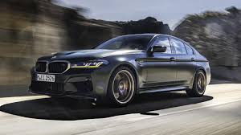
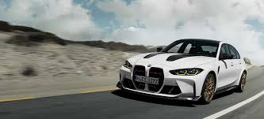

Menu
This is a my first web site :
this site was made for fun , it was about BMW motors cars
To have a better experience ,please sign in
Sign in


Recherche avec Google:
www.google.com
It's a German acronym for
Bayerische Motoren Werke
, which translates to Bavarian Motor Works in English
Supercars: Power, Performance, and Prestige
BMW, short for Bayerische Motoren Werke, is a name synonymous with luxury, performance, and cutting-edge automotive engineering. Among its most iconic offerings are its supercars and high-performance vehicles, especially those in the BMW M division. Additionally, specialized tuning companies like G-Power have taken BMW models to the next level, offering enhancements in speed, handling, and sheer horsepower. This essay explores BMW's M lineup, the influence of G-Power, and the various levels of performance these vehicles offer:
The BMW MDivision:
Motorsport Heritage The BMW M (Motorsport) division was created in the 1970s to develop high-performance versions of standard BMW models. Over the years, M cars have evolved into some of the most respected sports vehicles in the world. Key models include:
BMW M3:
Originally launched in the 1980s, this compact sports sedan combines lightweight agility with strong engines. The latest versions feature turbocharged inline-6 engines producing up to 503 horsepower (in the M3 Competition).
BMW M4:
A coupe variant of the M3, the M4 offers aggressive styling and similar performance. The M4 CSL, for example, reaches 0–100 km/h in just 3.7 seconds.
BMW M5:
A high-performance version of the 5 Series sedan, the M5 features a V8 twin-turbo engine and all-wheel drive (in newer models). The M5 Competition pushes out up to 617 hp, making it a true beast on the road and track.
BMW M8:
The top of the line, this luxury grand tourer combines breathtaking speed with comfort. The M8 Competition Coupe delivers 617 hp and a 0–100 km/h time of 3.2 seconds.
G-Power:
Taking BMW Performance to the Extreme While BMW M cars are already powerful, G-Power, a German tuning company, specializes in pushing BMWs beyond factory limits. Their modifications typically include upgraded turbochargers, exhaust systems, ECU tuning, and lightweight body parts. Some of the most impressive G-Power creations include:
G-Power M5 Hurricane RR:
Based on the E60 M5, this car once held the title of the world’s fastest sedan with a top speed of over 372 km/h (231 mph) and 800+ horsepower.
G-Power M4 GTS:
Tuned to produce over 600 hp, this model outperforms many traditional supercars in both acceleration and track performance.
G-Power cars are known not just for speed, but also for precision engineering and durability at high speeds. Performance Levels: Power That Evolves BMW offers different performance "levels" or trims in its M models: Base M Models – Powerful but slightly less aggressive in tuning. Ideal for those who want daily performance. M Competition – Enhanced power, firmer suspension, better exhaust sound, and sharper handling. CS/CSL (Club Sport/Lightweight) – Track-focused versions with weight reductions, performance upgrades, and limited production. G-Power Tuned – Beyond BMW’s own offerings, G-Power versions are usually custom-built and capable of over 800 to 1000+ horsepower depending on the model.
Conclusion :
BMW supercars, especially the M series, embody the brand’s racing DNA and engineering excellence. With options ranging from the agile M3 to the ferocious M8, and extreme tuning from G-Power, BMW delivers a driving experience that satisfies both purists and thrill-seekers. Whether you’re looking for track-ready performance or autobahn-dominating speed, BMW’s supercar offerings continue to lead in the world of high-performance luxury.
contact me